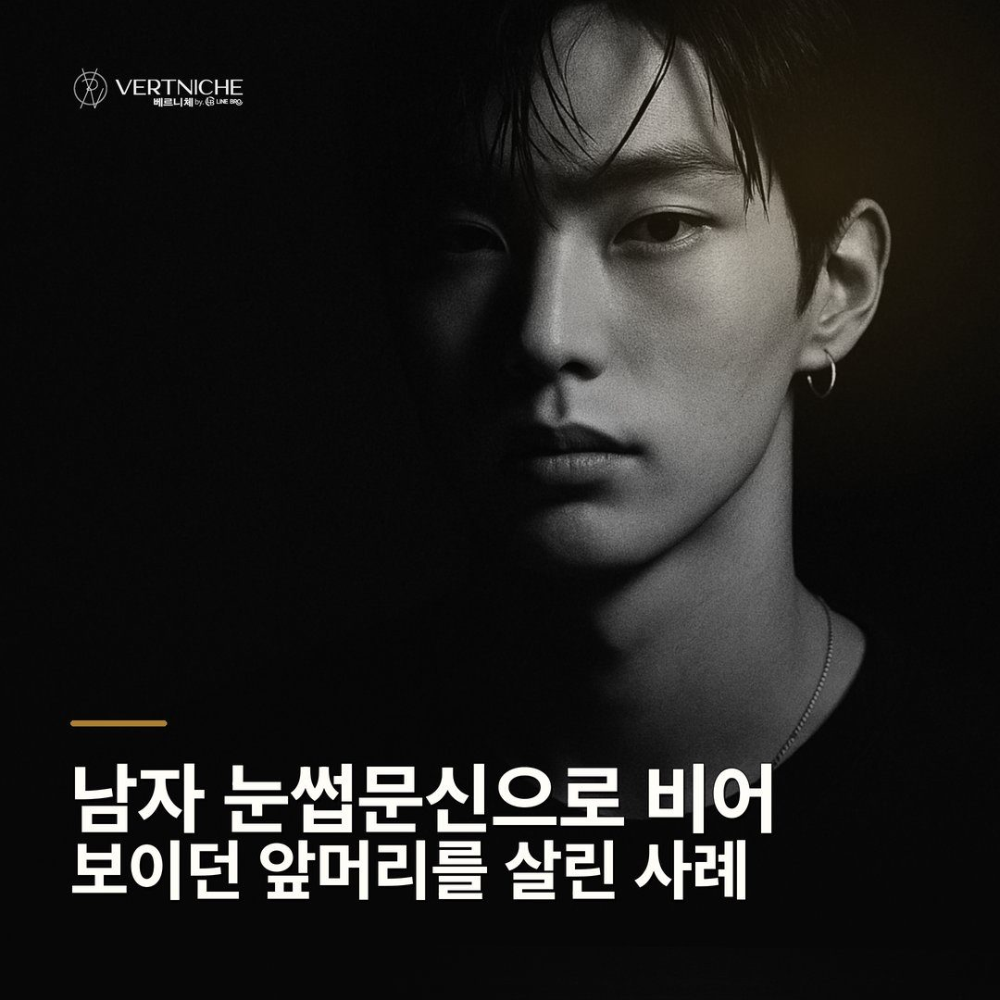

남자 눈썹문신, 비어 보이는 앞머리부터 봐야 하는 이유

- 인상이 약해 보이는 진짜 위치는 '앞머리'예요
- 왜 비어 보이는지, 원인부터 봐야 방향이 나와요
- 앞머리 시작점을 뒤로 빼면서 균형을 잡아요
앞머리가 비어 인상이 약해 보이던 손님 사례로, 남자 눈썹문신에서 밀도와 시작점을 어떻게 잡는지 정리했습니다.
인상이 약해 보이는 진짜 위치는 '앞머리'예요
많은 분들이 눈썹이 흐릿하면 전체를 진하게 채워야 한다고 생각하세요. 근데 실제로 인상을 가르는 건 눈썹 전체가 아니라 앞쪽 시작점, 앞머리 밀도인 경우가 많아요.
왜 비어 보이는지, 원인부터 봐야 방향이 나와요
앞머리가 비어 보인다고 다 같은 이유는 아니에요. 애초에 털이 안 나는 자리라 비어 있는 경우가 있고, 털은 있는데 자라는 방향이 위로 쏠려서 시작점이 뚫려 보이는 경우가 있어요.
앞머리 시작점을 뒤로 빼면서 균형을 잡아요
앞이 비어 보인다고 무조건 앞쪽으로 밀어서 채우면 안 돼요. 시작점이 너무 안쪽으로 들어가면 두 눈썹 사이가 좁아지면서 오히려 인상이 답답해지거든요.
진하게 채우는 게 아니라 밀도로 살려요
앞머리가 비어 있으면 확 진하게 채우고 싶은 마음이 들어요. 근데 저는 개인적으로 앞은 특히 진하게 안 넣는 편이에요.
자주 묻는 질문
앞머리만 부분적으로 시술하는 것도 되나요?
비어 있는 자리가 앞쪽이라도, 전체 균형을 보고 결정해요. 앞만 채웠는데 중간·꼬리랑 밀도 차이가 크면 오히려 앞만 도드라져 보이거든요. 그래서 앞을 살리더라도 전체 흐름 안에서 자연스럽게 이어지게 잡는 편이에요.
눈썹 방향이 위로 쏠려서 비어 보이는데, 문신으로 완전히 해결되나요?
방향 때문에 비어 보이는 경우는 채움으로 상당 부분 개선되지만, 원래 털이 쏠리는 방향까지 바꾸는 건 아니에요. 그래서 상담할 때 어디까지 자연스럽게 정리되는지 솔직하게 말씀드리고 방향을 잡아요.
시술 후에 앞머리 시작점 관리는 어떻게 하나요?
시작점 잡아드린 라인 밖으로 자라는 잔털만 스스로 정리하시면 돼요. 라인 안쪽은 건드리지 마시고, 특히 미간 쪽은 살짝만 밀어도 티가 나니까 조심하셔야 해요.
요약입니다. 사례와 사진이 있는 전체 글은 네이버 블로그에서 볼 수 있습니다.